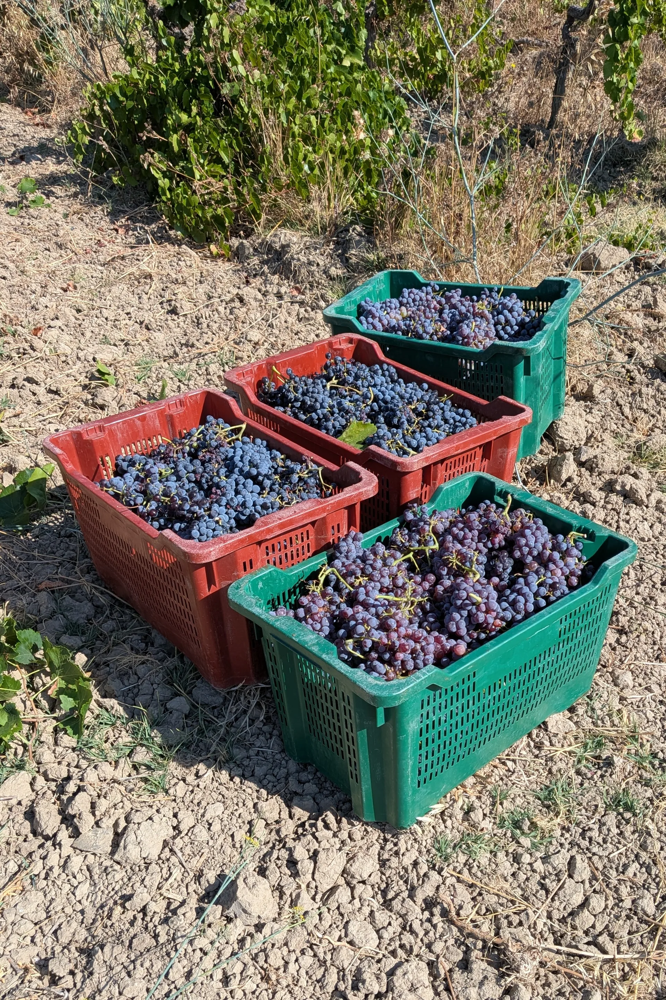
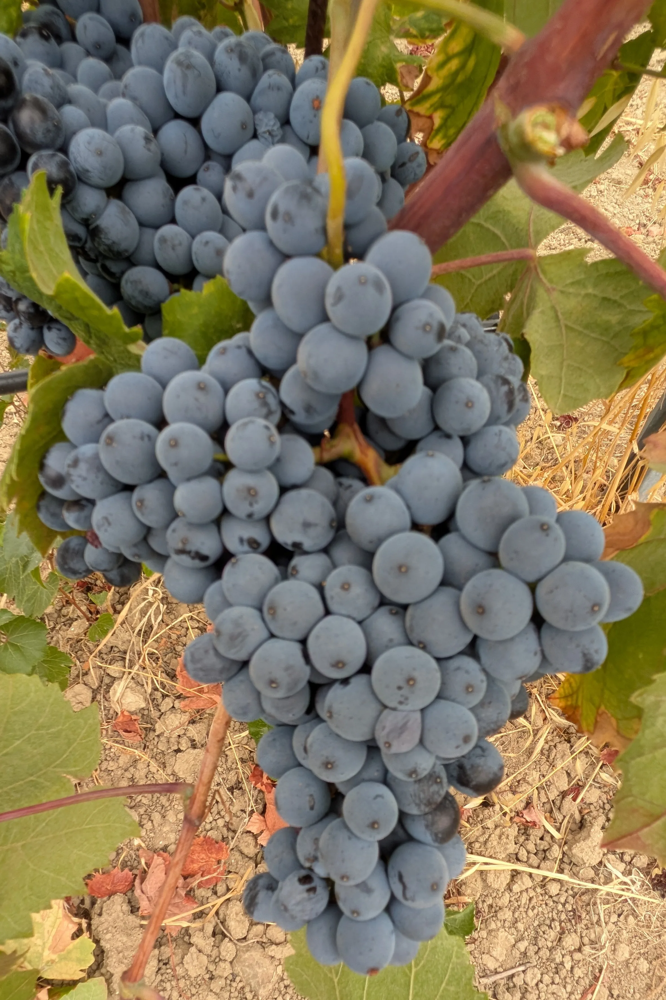
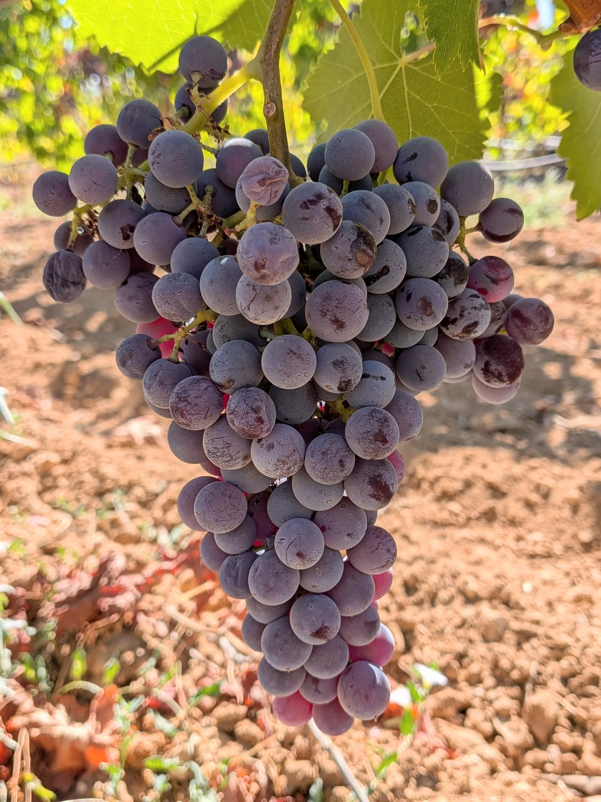
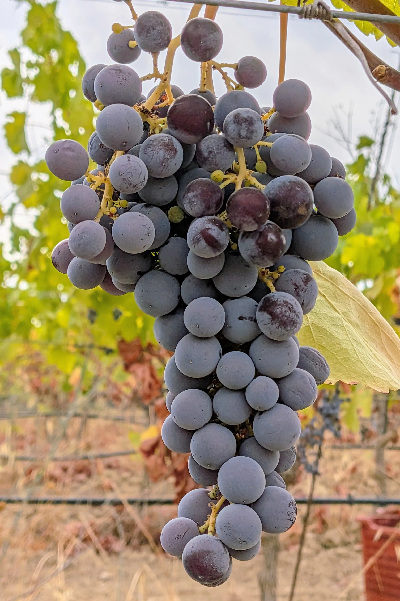
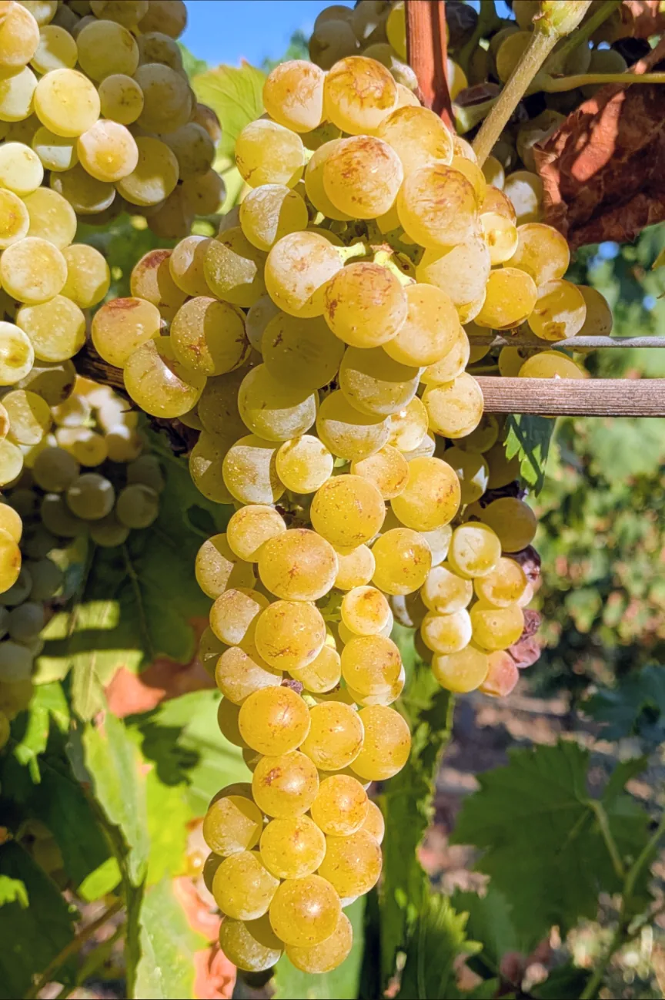
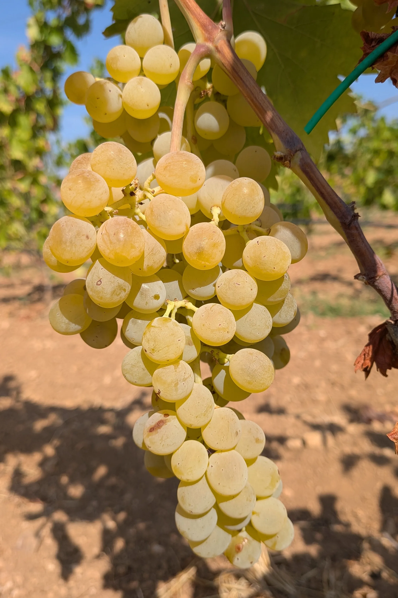
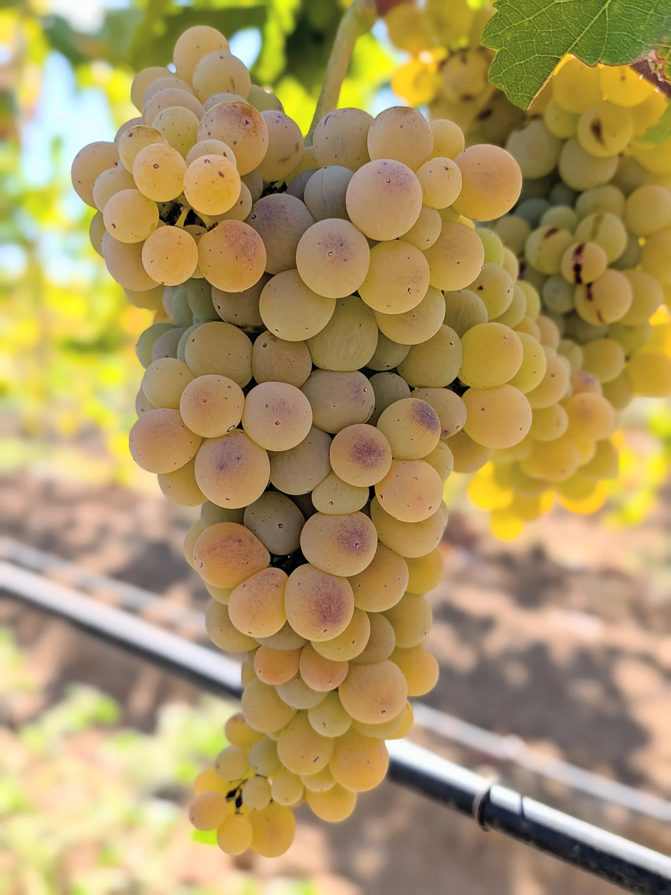
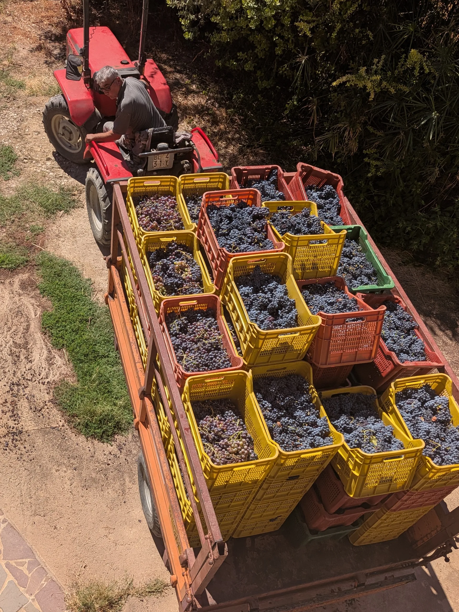

Uve
Raccolta rigorosamente manuale in piccole cassette forate, con selezione dei grappoli. L'uva arriva in cantina sana e integra.

Raccolta in piccole cassette forate

Barbera sarda

Cannonau

Monica in fase di invaiatura, quando l'uva inizia a cambiare colore e maturare

Monica

Moscato

Nasco

Nuragus

Scarico delle uve